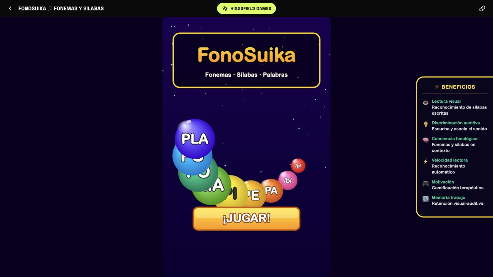

01
Fonemas · Sílabas · Palabras
FonoSuika
Un juego de combinación y caída para reconocer, escuchar y relacionar unidades sonoras y escritas mientras se mantiene la atención.
Conciencia fonológicaLectura visualMemoria de trabajo
Jugar ahora ↗